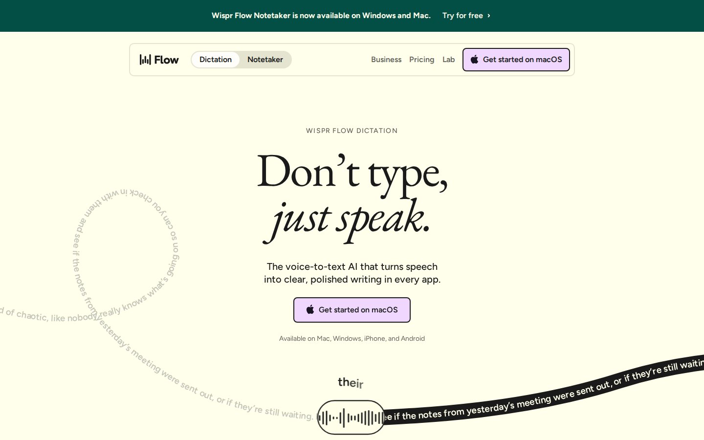
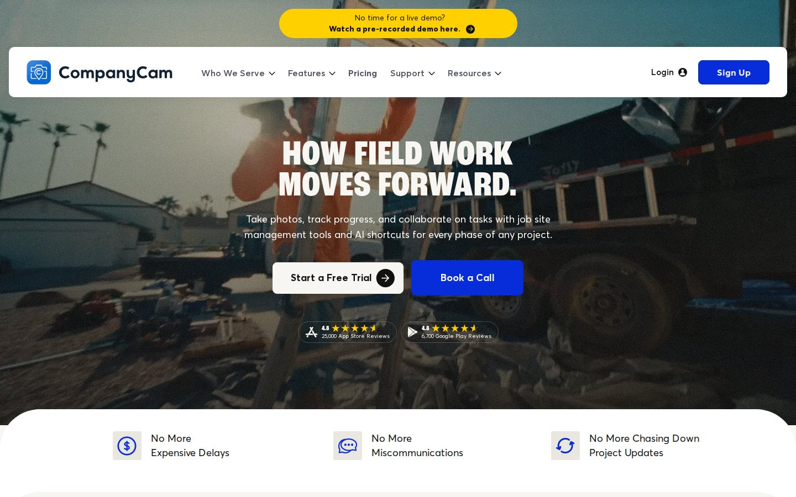
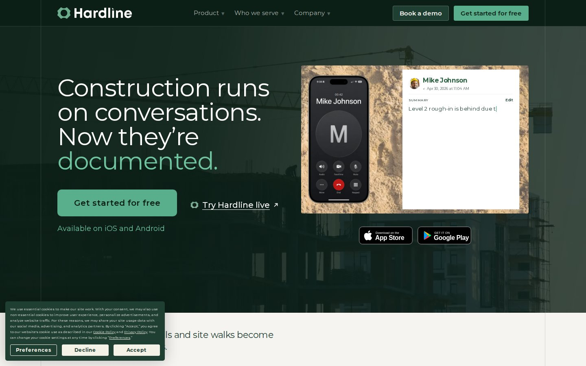

01 · SKT COMPETITOR & WORD INTEL
24 Competitors Audited. Real UI, Real Words.
01 · THE WHITE SPACE
Any trade.
One tech. One report. Before the truck door closes.
Desk AI (Granola, Wispr Flow, Otter) transcribes meetings. It never fills a 4-point form.
Vertical suites (ServiceTitan, CompanyCam, Fieldwire) paywall AI behind team tiers: CompanyCam Crew $119/mo, Fieldwire forms $64/user/mo.
Vertical suites (ServiceTitan, CompanyCam, Fieldwire) paywall AI behind team tiers: CompanyCam Crew $119/mo, Fieldwire forms $64/user/mo.
Desk AI
Vertical suite
02 · COMPETITORS AUDITED
24 + 18
24 live UI captures + 18 voice-to-doc threats scored on App Store
Tagline, price, funding, rating count and 1 to 3 star reviews, each with a source link.

Wispr Flow
CompanyCamFieldwire

Hardline03 · VERBATIM FIELD EVIDENCE
197
Unique verbatim quotes + 22 real form pages
Deduplicated from Reddit, InterNACHI, ContractorTalk and trade press. Every quote links to the original post.
 Adjuster narrative
Adjuster narrative 4-point form
4-point form
CARBYN · COMMAND CENTER | GOOGLE DOC ↗ | GOOGLE SHEET ↗
01 / 12